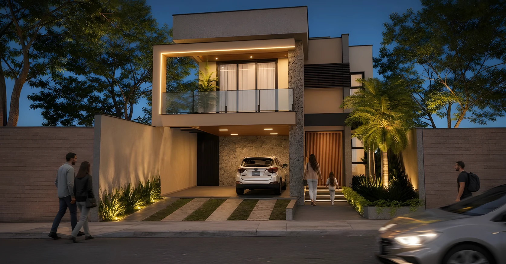
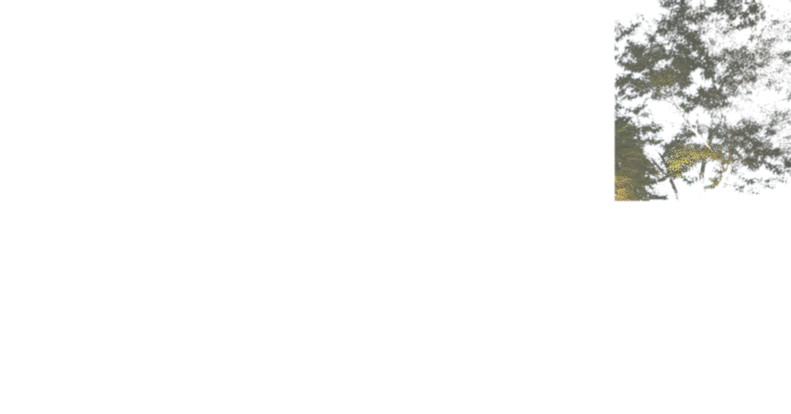
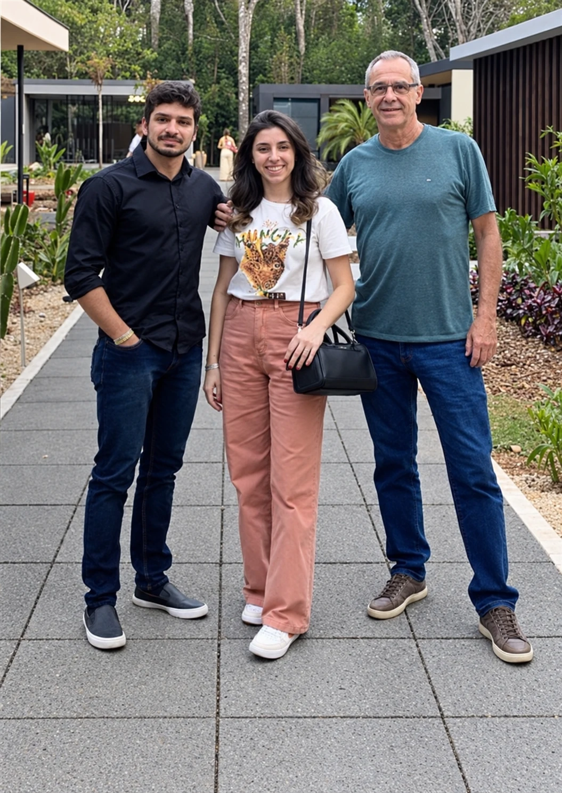

Arquitetura residencial
Residência contemporânea
Uma composição de volumes marcantes, pedra, vidro e luz. A fachada estabelece presença na rua; no interior do lote, áreas de convivência aproximam arquitetura e paisagem.


D’arco Arquitetura Lavras, Minas Gerais
Projetos de arquitetura e interiores pensados para quem vai viver cada espaço.
Conheça os projetosO escritório

Há mais de 35 anos, a D’arco transforma ideias em espaços feitos para pessoas. Arquitetura e design de interiores se encontram em um processo próximo, atento ao contexto e às escolhas de cada cliente.
Da primeira conversa aos detalhes que dão identidade ao ambiente, o desenho procura equilibrar estética, uso e permanência.
Portfólio
Arquitetura residencial
Uma composição de volumes marcantes, pedra, vidro e luz. A fachada estabelece presença na rua; no interior do lote, áreas de convivência aproximam arquitetura e paisagem.
Arquitetura comercial
Planos de vidro, brises e uma área externa generosa organizam a experiência do espaço. A arquitetura valoriza a relação entre a fachada, a circulação e os encontros.
Arquitetura comercial
Uma fachada aberta para a rua anuncia um espaço de encontro. A marquise, o vidro e os materiais quentes aproximam o salão da área externa.
Atuação
Casas desenhadas em torno da rotina, dos encontros e da relação com o lugar.
Espaços que expressam a identidade do negócio e recebem bem quem os utiliza.
Ambientes em que materiais, luz e mobiliário constroem uma experiência coesa.
Contato